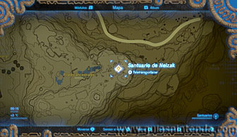
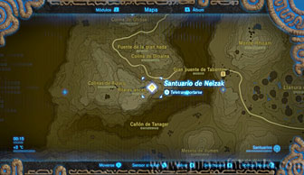
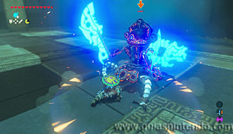
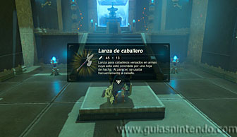

Este santuario está disponible desde que llegas a la región de la torre de Tabanta, al sudoeste de dicha torre.

Tendrás que enfrentarte a un miniguardián 4.0. Solo se abrirá la puerta de salida cuando hayas acabado con él. Tras ella verás las escaleras que te llevan al altar y un cofre delante de él. Después de abrir el cofre (que contiene una lanza de caballero) podrás llegar al altar y conseguir el símbolo de valía correspondiente.
